日付 '08 06/14-15
参加者 5名
行先 比良 武奈ヶ岳方面
コンセプト 武奈ヶ岳でのご来光を見ること
撮影機器 PowerShot A70
COOLPIX S200
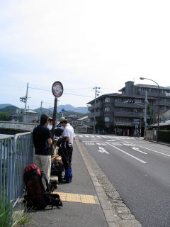 9時，大学近くの修学院道バス停で朽木方面のバスを待つ。
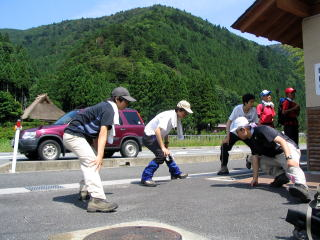 10時，坊村にて。青天の下準備体操して出発します。
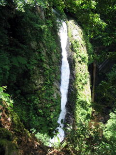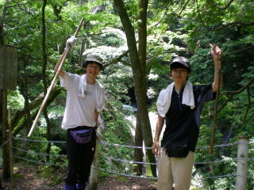
10時45分，酸の滝にて。新入生が酸に冒されそうなので，早々に立ち去ります。
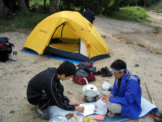 午後3時，スキー場跡地に到着。夕げの準備を始めます。
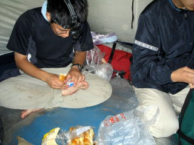 翌朝（？）2時起床。軽く夜食を済ませます。
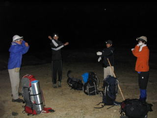 準備体操は欠かしません。
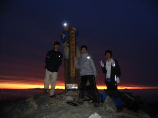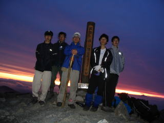
4時，山頂到着。シャッター速度MAXです。
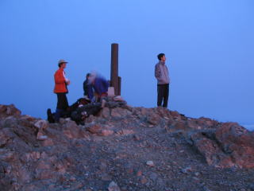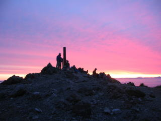
30分後，まだ日は昇りません。しかし，期待の持てそうな朝焼けです。
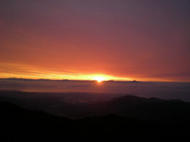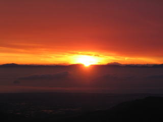
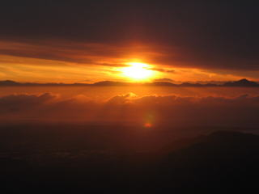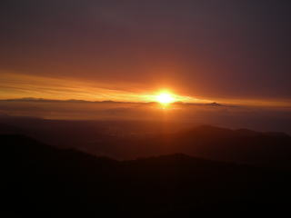
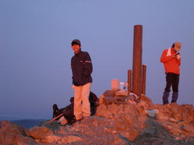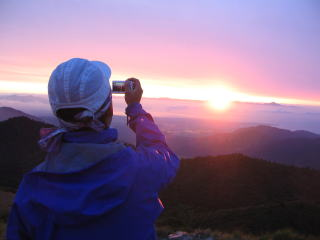
4時40分，ようやく日が昇りだしました。残り半年の目標を立てます。
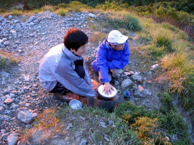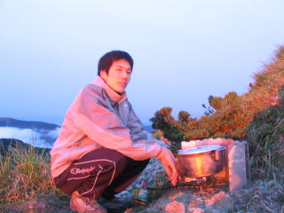
ここでようやく朝げの支度です。
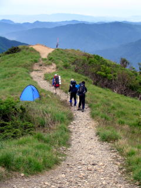 山頂横のテント。日の出にも関わらず中からは誰も出てこられませんでした。
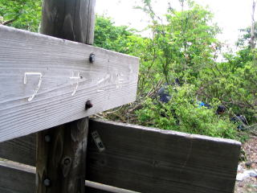 6時，ワサビ峠を通過。
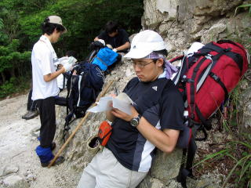 7時半，金糞峠でルートの確認。
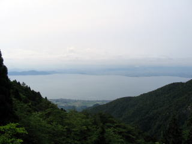 琵琶湖。宝が池でより大きいです。
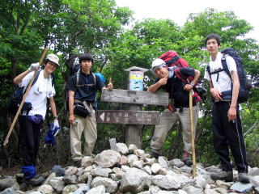 9時10分，釈迦岳にて。
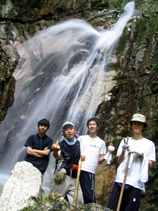 ブログ掲載画像。こっちは無修正版です。
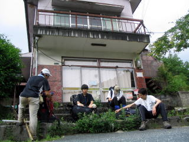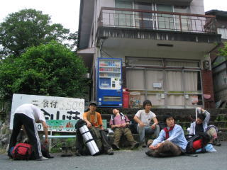
左，今年 右，去年。 自販機が消えています。
 活動記録に戻る 活動記録に戻る
|
|